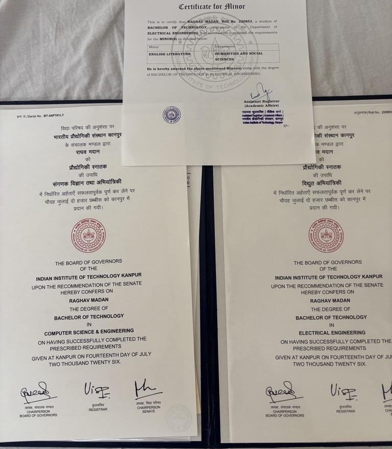
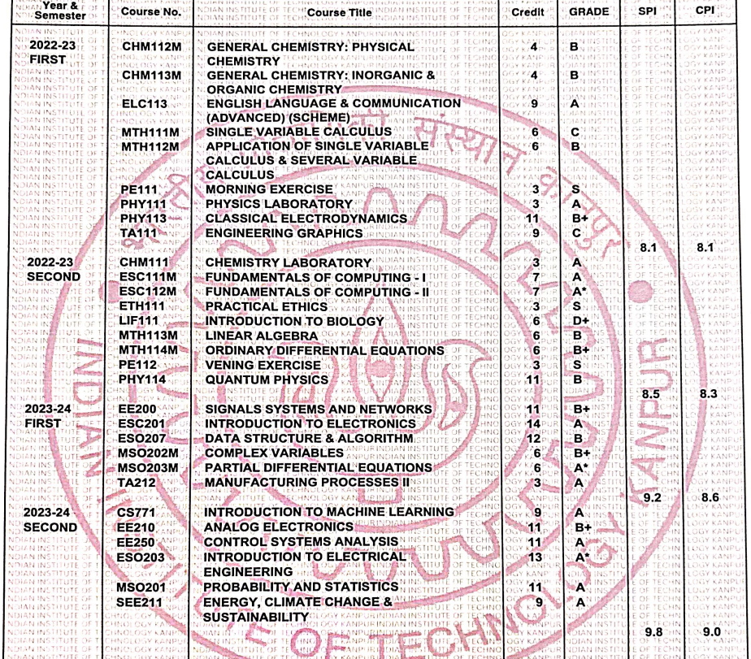
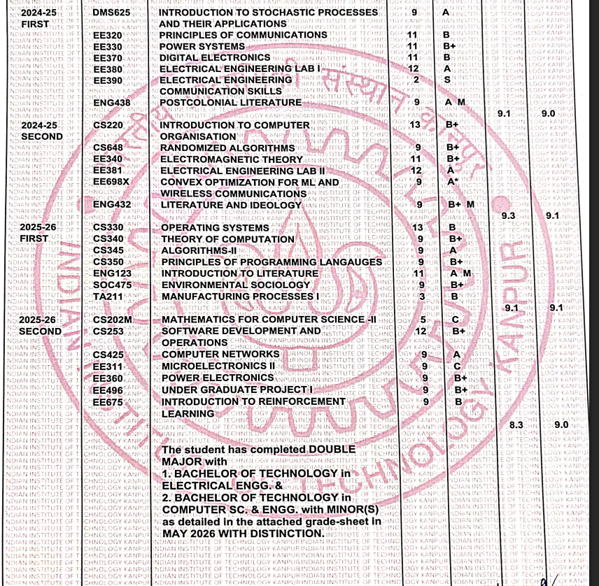
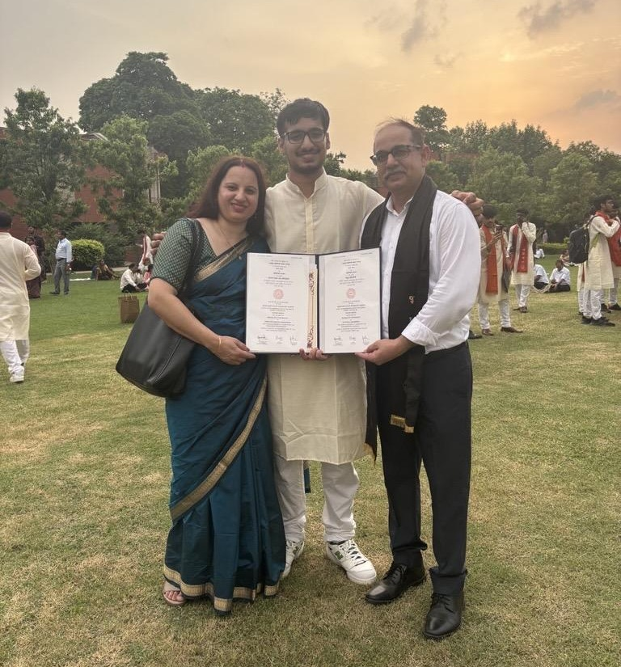
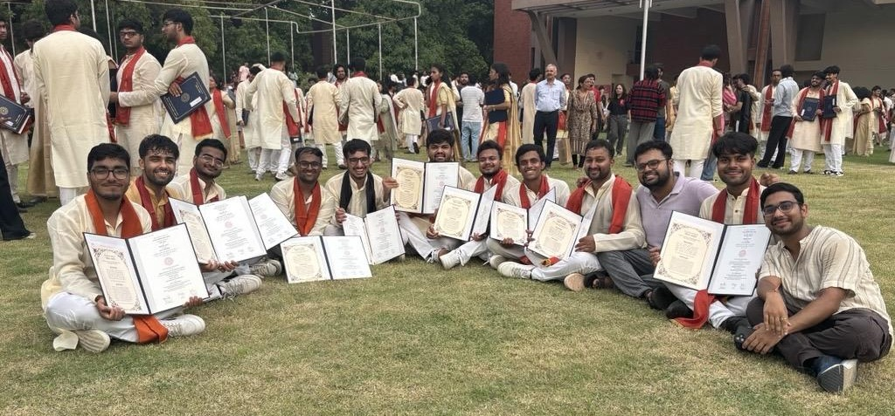

I graduated from IITK with 2 majors in Electrical Engineering and Computer Science and Engineering with a minor in literature in just 4 years. It's the first time someone completed a double major in just 4 years, and many juniors reached out asking how I managed to do it. Here’s a little writeup about how I did it.

Preface
When I joined IIT Kanpur, I never imagined that I would graduate with two majors and a minor within the standard four-year program. In fact, none of this was part of a grand plan. My only goal was to make the most of the opportunities IITK offered.
Like many JEE aspirants, I had initially hoped to study Computer Science. After my JEE result, I even considered taking a drop because I couldn't get CSE at any of the older IITs (mostly because I couldn't get a 3 digit rank), and I genuinely believed I could do better. Although my parents and teachers didn’t let me take a drop, and I decided to join Electrical Engineering at IIT Kanpur instead.
Before arriving on campus, I discovered that IITK offered remarkable academic flexibility — branch changes, double majors, minors, and a highly customizable academic template. I went in with the simple mindset of exploring every opportunity available. Initially, like everyone, I planned to attempt a branch change to CSE. I assumed there would be multiple chances, but I soon learned that an EE-to-CSE branch change required a perfect 10.0 CPI and, more importantly, there was effectively only one realistic opportunity.
During my second year, I came across a blog about a senior completing 5 minors for the first time in history. I remember thinking, "It would be pretty cool if I could graduate with five minors and become one of the handful of people to do it." . Although it was more of a fun thought experiment than a serious goal.
This article will essentially explain how I played with my academic template and utilized IITK's academic flexibility to the max. For me, completing a double major in four years was never a target or milestone — it simply happened.
Interest Development
In my first semester, I used to see my friends working on ESC111 and ESC112 lab assignments. For reasons I still don't fully understand, watching their test cases pass felt incredibly satisfying, and it was probably the first academic thing that seemed interesting to me after JEE.
So during the second semester, I started spending some time on coding apart from the coursework. Initially, it was just curiosity. I wasn't thinking about internships or placements yet. I simply liked it. That curiosity slowly became direction. ESC111/112 created a good perception about CSE courses, and I was interested in exploring more CSE courses.
3rd Semester
Having an A* in ESC112M proved to be beneficial since ESO207 was only awarded to people with an A*. My third semester was initially 63 credits — core EE and MSOs + HSS + DSA. Initially, I thought ESO207 would be simple and that I'd just study regularly. But I was wrong on so many levels. Obviously, the course crowd was the cream of the crop — CSE and a selected few; it was my first time doing a course with such a competitive crowd. Many people were much smarter than me, and many had exposure to competitive programming, whereas I was someone who had just entered the world of CP. So I obviously tried my best, but my approach was wrong — instead of practicing, I was focusing only on completing the lectures, and most of my days were spent typing those long assignments in LaTeX. Nevertheless, I enjoyed the course and managed a B. I knew that this grade might restrict me from pursuing Algo 2, but I didn't think about it that much at the time.
During that semester, my HSS was not going well and I was below average the entire time. I didn't know what to do; there was a dilemma over whether I should drop it or not, since it was my first semester where I could actually use the drop button. I took the advice of my seniors and DUGC student nominees; a lot of them advised me not to drop it since it could create trouble getting the course later, but by that time, I had studied my EE template in detail and took the risk to drop it.
I think this was the point of no return; after this point, I never hesitated to play with my template and utilize IITK's academic flexibility to the max.
4th Semester
At the end of my 3rd semester, my CPI was 8.6, and I needed to reach 9 before my internship season. My semester consisted of 58 credits. Theoretically, I couldn't reach 9 with that many credits, nor could I find a 5–6 credit modular course to add. I considered taking a 9-credit course and dropping TA211; this way, my semester would total 64 credits, and I could take that 3-credit course later, as 3 credits could fit anywhere in my template. Moreover, it was a lab and wouldn't clash with any other course. During the pre-registration for my 4th semester, I clicked on CS771 when it opened (knowing I likely wouldn't get it, as many CSE students were ahead in line), but the unexpected happened, and I got it. So, I proceeded with my plan and dropped TA211.
I won't go into details, but the 4th semester was tough, and it took everything I had to reach that 9 target.
Summer After the 4th Semester
At this point, I wasn't thinking about minors, majors, or CSE courses; my only target was securing a quant internship. I took an HSS course in the summer and participated in a SURGE project, thinking I would manage both alongside my internship preparation. However, that HSS course was going poorly again, and I was expecting a C, so I dropped it (after paying ₹18k for it). I couldn't spend much time on the SURGE project, either. But yes, I registered for a summer semester and ended up taking no courses!
At the start of the summer, I also applied for a double major in CSE without much thought, mainly because I wanted to be able to sit for internships as a CSE major. By the end of the summer, I was wishing to get that double major, as it would give me one more year to reach Candidate Master on codeforces, but I didn't get it; the cutoff at that time was 9.3. Although I was officially allocated a minor in Theory of Computation (ToC).
I also didn't secure the internship I wanted, but I was sufficiently burnt out from preparing for it.
5th Semester
During the add-drop period of my 5th semester, my request for Algo 2 was rejected since I didn't have an 'A' in ESO207. After that, I had planned on chilling that semester and didn't want to take an extra course as 56 credits seemed sufficient. However, my wingie was taking DMS625 (Stochastic Processes); it seemed interesting and aligned with my 'quant' fantasy, so I took it, and once again, the semester load reached 65 credits. There were no CSE courses that semester. Since the internship season was over, I was considering setting a new academic target for myself — perhaps completing all CSE minors, though it seemed improbable at the time since I didn’t get Algo2 and was already one HSS behind my template.
Another event during my 5th semester that put me in an advantageous position to complete my double major in four years was the HSS allocation. Initially, I received an HSS that clashed with my other courses, largely due to my own error in filling out the HSS form. I emailed Prof. Suchitra Mathur, and she allocated me her HSS course on post-colonial literature. The key difference was that this HSS was allocated to me as a PRF course (a PG course); this meant the Pingala system registered me as being behind on one HSS Level 2 course, which consequently opened an HSS-2 allocation for each of my subsequent semesters. Even though I had completed an HSS-2 in my 5th semester, the system mistakenly thought I had not completed any HSS in my 5th semester. This was a huge relief, as it meant I didn't have to beg professors to grant me an HSS seat in my 6th semester (since there was no HSS in 6th semester in EE template).
Two Incidents That Could Have Ended Everything
Another instance where I saved myself from ruining this plan was when I considered dropping either EE370 or EE330 as both of them were not going great at that point in time.
I decided against dropping EE330 because my minor in ToC required CS340, which was only offered in my 7th semester — the same semester where I would have had to retake EE330. Since the timings of CS340 and EE330 clashed, I kept EE330 to ensure I could take CS340 in my 7th semester.
Regarding EE370, I initially initiated a drop because the course wasn't going well. Two days later, however, I received a call from Prof. Shubham Sahay. He explained that my performance wasn't poor enough to warrant dropping the course, adding that I would likely earn a B if I continued, as he would grade the class fairly. I then asked him to decline my drop request.
Had I dropped EE370, I wouldn't have had enough credits to complete the second major. Ultimately, without these two unintentional incidents — especially the second one — I wouldn't have been able to complete a second major in four years.
6th Semester — Seeing the Path for the First Time
During the pre-registration for my 6th semester, even though there was no HSS course in my template, for me the HSS allocation opened for both HSS1 and HSS2 (since HSS1 was pending and the system thought HSS2 was also pending). I didn't receive a favorable HSS1 allocation, so I dropped it, but I was again assigned Suchitra Mathur's 'Literature and Ideology' as my HSS2. I was happy with this because the course was relaxed in the previous semester, and a large portion of the grade was based on take-home assignments.
The 6th semester, according to the official template, consisted of two DCs, one OE, and two DEs. However, by that time, I was in the habit of deviating from the template. Instead, I took two DCs, one HSS, one non-basket DE (Convex Optimization), and two OEs of my choice. At this point, I wasn't thinking about doing a double major; I just wanted to explore more CSE courses. I couldn't resist taking Randomized Algorithms and also wanted to try out a systems course, so I took CS220 as a prerequisite for OS (CS330), which I planned to take in my next semester.
It was in the middle of my 6th semester when I realized that if I secured the necessary courses in the subsequent semesters, I could complete a double major in CSE in four semesters. At that point, this felt like an abstract goal given the number of dependencies involved. I needed to get my desired courses in my 7th and 8th semesters, ensure there wouldn't be any clashes between them, and, most importantly, get the double major allotted at that time because a double major cannot be granted retrospectively. I couldn't even discuss this idea with any DUGC or SUGC nominees at that point because there were so many variables, and nobody believed it was possible.
From that point on, I was extra careful in planning my template, looking at previous years' timetables to ensure the most optimal scheduling so I could fit them without clashing. Completing all DCs was a relief. Moreover, the 36-credit OE waiver for the double major was also helpful; since ESO207 was not considered a double major requirement (although it was a compulsory course for double major CSE), it could be counted towards my OE credits, and DMS625 was the only non-CSE OE I had. So, out of the 54 OE credits required, 36 were waived, and ESO207 plus DMS625 totaled 21 credits (exceeding the limit of 18 credits I required). Consequently, the next two semesters involved 4 DEs (two basket and two non-basket), the CSE requirements for the double major, and HSS1 plus HSS2. The CSE requirements consisted of all DCs (of which I had completed CS220, and CS203M was waived due to MSO201 (overlapping content)) plus 4 CSE DEs (two basket and two non-basket, of which I had done CS771 — a basket course and Randomized Algorithms — a non-basket course).
7th Semester — The Double Major Allotment
Since the EE basket DEs were only offered in even semesters, nothing could be done about them, so I left that thought for later. I had to complete all the odd-semester CSE DCs — CS330, CS345, and CS340; those were non-negotiable. Additionally, I decided to complete all my HSS requirements this semester to avoid clashes between EE basket DEs and HSS, a significant issue I had seen others experience. Consequently, I completed both remaining HSS1 and HSS2 requirements. Moreover, I selected one CSE basket DE (the only one that didn't clash with my template), maintaining the same focus to ensure I wouldn't have limited options in the next semester. I also fit in the 3-credit TA course I had previously dropped. (So yes, the two dropped courses in my 2nd year were completed this semester).
This was another 63-credit packed semester.
I took "Introduction to Literature" as my HSS1, which completed my literature minor.
For me to be allotted a double major, there needed to be empty seats; i.e., someone from the remaining 10 people had to drop it. I knew for sure one was dropping it, and I talked with one more who was in a dilemma. It turned out she was dropping it too, so we had 2 empty seats.
The 7th semester was tough — all the core CSE courses fit together, and it was very lab-heavy. I had three labs in a week (two OS labs and one TA lab, and the OS labs usually lasted for 4 hours). I somehow managed to maintain my CPI at 9.1 and was allotted the double major at the end of the 7th semester by the barest of margins. It turns out that out of all the people who applied for the double major in CSE, three of them (including me) had a 9.1 CPI (highest among all those who applied) by the end of the 7th semester , so they had to create an extra seat because there was a tie.
The Senate Problem
But the worry was not over yet. The UG manual stated that the minimum duration for completing a B.Tech degree was 7 semesters, and the minimum for a double major was 9 semesters. I still don't understand why there was a minimum duration for completing a degree when the maximum duration from our batch (Y22) onwards had been removed (there is no maximum duration). The minimum duration of 7 semesters for a B.Tech made sense, as any degree's credit requirement was greater than 4×65+107=367, so it couldn't be completed in the 6 semesters. My assumption is that they just set it at 9 semesters because, since a B.Tech degree can't be completed in 7 semesters, they simply added one year to that for a double major. Moreover, no one ever raised a concern about this because no one had ever done it before.
So, my task was to convince the Senate to let me graduate in 4 years. It was not very troublesome; the DUGCs of both departments were convinced when I talked to them, and subsequently, on their recommendations, the SUGC was also convinced. Finally, my request was approved in the senate meeting — thanks to the SUGC student nominees for pushing it.
8th Semester
The 8th semester consisted of the rest of the remaining courses: 2 CSE DCs (CS253, CS202), 1 CSE DE (CS425), and 4 EE DEs (one of which I took as a UGP).
Here is my entire transcript for your reference -


Closing Thoughts
IITK’s academic flexibility is not a myth. Having friends from other IITs as well, I think no other institution in India can currently match the academic flexibility that IITK offers. And if there is flexibility , I will say - use it to the maximum. I never intended to break a record or do courses just to get a degree, I was just trying to do courses that I was interested in for most of my time at IITK. I would have done even more courses if I was allowed to cross the 65 credits limit. Other than that I just got lucky a few times and managed my template well. But I think continuously surviving loaded semesters was only possible due to my interest in the courses I was taking and my desire to learn.
Most importantly, none of this would have been possible without the support of my parents. There were times when I felt crushed under academic pressure, and during those moments, they were my entire support system.

Given that I accomplished this despite most of my semesters being unplanned (from the pov of completing the degree) and the uncertainty surrounding my double major allotment in the seventh semester, I believe that with proper planning, someone who receives their double major allotment in the fourth semester could easily replicate this feat. I hope to see more such instances in the future, provided that the course load does not increase and the institute does not impose new restrictions.

Homies ftw